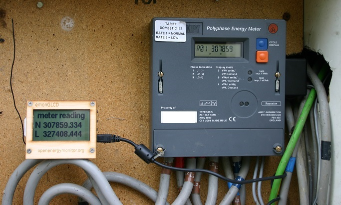
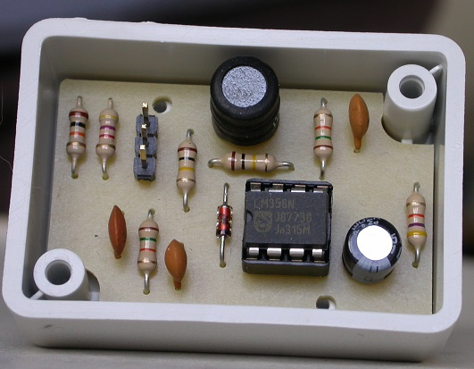
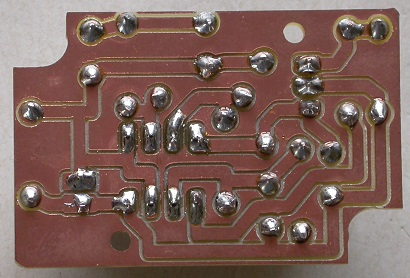
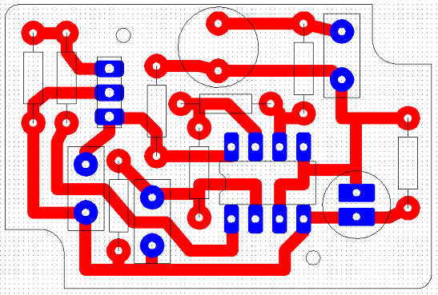

Has anyone else looked into this?
I managed to get mine working yesterday...

The best bit is that the readings are in Wh so you can see each pulse.
Unfortunately it doesn't include the reverse register, just the kWh and kWArh registers.
I don't think all Ampy meters have this feature either.
The little black box on the right is my inductive pickup.
Re: Reading Ampy meters via the inductive serial port
FAB!
you simply have to give us more details!
What are he devices involved and sources of such devices?
this looks like exactly what i want
I'm tired of the current cost clamp being so badly accurate and reading FLAG registers might prove expensive and less flexible - unless someone knows different?
cheers
Re: Reading Ampy meters via the inductive serial port
Very nice! nice work!
A similar thing can be done with the A100C Elster meter's that are typically used with Solar PV installations in the UK but using an IR transistor instead to read from the IrDA port http://openenergymonitor.blogspot.co.uk/2012/08/reading-watt-hour-data-from-elster.html
Re: Reading Ampy meters via the inductive serial port
I'm interested in doing this. Do you have any details on the Loop Pickup sensor you used/made?
Is the information the same as you can get out of the IEC optical port? I have tried to get a readout of the opitcal port but it doesn't seem to provide any registers (it acknowledges my query but doesn't send any data). I'm hoping I might have more luck using the inductive port, but I can't find much info on how to make an inductive reader.
Re: Reading Ampy meters via the inductive serial port
The first thing to check is that your meter has an inductive serial port. If it's the same as mine, a 5192J, then obviously it does, if not then you need to hunt down a manual for your meter and check. The 5192J manual is very vague, it just says something like "the meter incorporates an inductive serial port which transmits data through the case". Everything else I had to work out for myself.
The circuit diagram for my homemade receiver is just on a scrap of paper at the moment but if your meter definitely has an inductive port and you want to go ahead then I'll make the effort to draw it out and post it here.
The data from the inductive port is the meter version and serial number followed by the 8 kWh registers and the 8 kVArh registers, all in ASCII hexadecimal.
The optical port has much more information and allows you to configure the meter but for that you will need the control software and password and messing with that is likely to get you into trouble with your service provider.
Re: Reading Ampy meters via the inductive serial port
Yeah, its the same meter. Any info you can provide on the pickup interface would be greatly appreciated!
Thanks
Re: Reading Ampy meters via the inductive serial port
I haven't got time to draw the circuit properly right now so I've attached a scan of my scrap of paper. Sorry about the scribble.
It's very simple, just an LC front end to act as a roughly tuned pickup followed by an amplification stage, a detector and a comparator. The output of the comparator can be fed directly into a 5V serial port but I included a resistor divider because I feed the output into an emonTx 3V serial port.
Here's a couple of photos of the prototype...


Re: Reading Ampy meters via the inductive serial port
Thanks! I've ordered the parts and i'll design my pcb tonight. Did you use PCBGCODE for your board?
Re: Reading Ampy meters via the inductive serial port
Did you use PCBGCODE for your board?
No, I used 2D PCB but the same process i.e using a milling machine.
I've attached the 2D PCB file in case it's any use to you and here's a screenshot in case it isn't...

Re: Reading Ampy meters via the inductive serial port
Hi, very interested in being able to record the meter usage. I found counting the light pulses wrong, as with solar generation I would get 1000s of pulses but no units.
I have succeeded with the circuit and have pulses going to my Arduino
But it makes no sense- I expected some ascii numbers but get rubbish
The drawing says 1200 baud but not the parity or stop bits or data size
I have found the position relative to the meter very critical - a few cm in any direction changes the signal
The meter is a Ampy 5192J
Attached is an xls of the signal from an oscilloscope
Any help would be appreciated
Mike
Re: Reading Ampy meters via the inductive serial port
Welcome, Mike,
MartinR hasn't been seen around here for a little while, so I'm not sure whether he'll see your question. If he doesn't respond, give me a prod and I'll try emailing him.
Have you tried interpreting the bytes as data rather than as characters - as unsigned long integers, for example?
Re: Reading Ampy meters via the inductive serial port
Hi, not had a response from MartinR, I would be grateful if you would email
I had no result with looking for byte data
Attached is a new trace showing the carrier wave (26hz)
Given that it should be on/off keying, it is difficult to see the "off" portion
Regards
Mike
Re: Reading Ampy meters via the inductive serial port
MartinR says:
The format is very simple, just on-off keying so you should see the ASCII output on any serial terminal. This is what a single line looks like....
AMP5165JA470507109 0014B4A4001488A700118265000000000000000000000000000000000000A792000B6343000B341C0009808C00000000000000000000000000000000000000B70811
I can’t remember what it all means off the top of my head but you should be able to work it out from the attached sketch. This is my initial sketch which uses a software serial port so that the decoded data can be sent via the hardware port. I haven’t looked at this sketch for a long time but I believe it works.
From the waveform that you captured, I'd suggest you need to experiment with the pickup - the tuning and damping. It might be that you have an excessive 'Q', meaning that the tuned coil continues to oscillate after the signal has been removed, and this is obscuring the 'off' periods. Adding a parallel resistor should help. I assume you've tuned the pickup for the correct carrier frequency.
Attached is his initial sketch. For his final version, MartinR says he integrated the Ampy meter reading code into his 3-phase code and used one of the hardware serial ports to read the meter and send the readings via radio to the emonGLCDs etc.